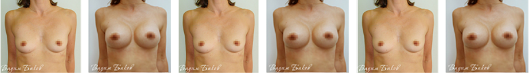

Операция по увеличению груди
Маммопластика – самая популярная пластическая операция в нашей клинике. Уже более 10 лет пластика груди в Москве ассоциируется в первую очередь с клиникой DoctorPlastic. Каждый день здесь проходит около десяти пластических операций груди. Таким образом примерно каждое второе увеличение груди в Москве и каждое пятое в России проводится в операционной нашей клиники. Почему же, планируя увеличение груди, пациентки обращаются в нашу клинику? Прекрасные хирурги – красивые результаты!
Можно много говорить о высочайшей квалификации наших пластических хирургов. Действительно, в нашей клинике работает целая команда замечательных профессионалов, но, как говориться, лучше один раз увидеть, чем сто раз услышать. Не зря страницы с фотографиями результатов - самые посещаемые на нашем сайте. Посмотрите и убедитесь, какой прекрасный эффект можно получить после пластики.
 Смотреть фото “ДО” и “ПОСЛЕ” увеличения грудиПоказания и противопоказания к операции
Пластическое увеличение груди делается исключительно по эстетическим показаниям девушкам старше 18 лет. Возрастных ограничений для женщин старшего возраста не существует. Маммопластика не имеет особенных противопоказаний. Операцию нельзя делать при наличии серьезных кардиологических или психиатрических проблем:
- онкологии,
- сахарном диабете,
- острых инфекционных заболеваний,
- при нарушении свертываемости крови и т.п.
Отзывы пациентов
Цены
Увеличение груди
| Увеличение груди - периареолярный доступ | |
| без смещения подгруд | 217 500 |
| со смещением подгрудной складки | 237 000 |
| Увеличение груди - подмышечный доступ | |
| без смещения подгрудной складки | 217 500 |
| со смещением подгрудной складки | 237 000 |
| Увеличение груди - доступ через субмаммарную складку | |
| без смещения подгрудной складки | 217 500 |
| со смещением подгрудной складки | 237 000 |
| Увеличение одной груди |
Часто-задаваемые вопросы
Смогу ли я кормить грудью после увеличения груди?
Безопасен ли силикон, используемый в имплантантах?
Сколько времени в среднем служит имплантант?
Что произойдет во время беременности?
Сохранит ли прежнюю подвижность моя грудь после ее увеличения?